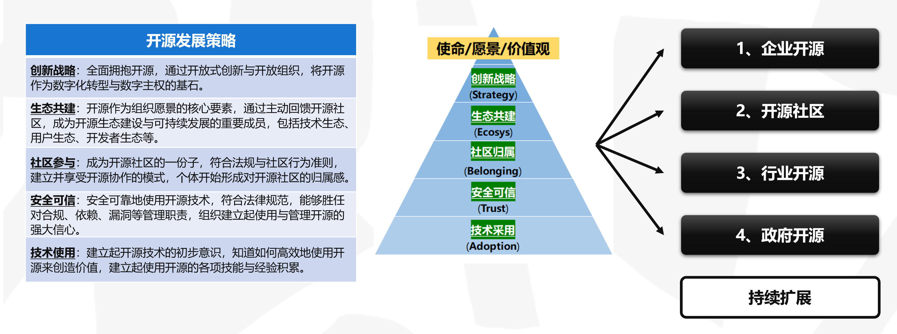
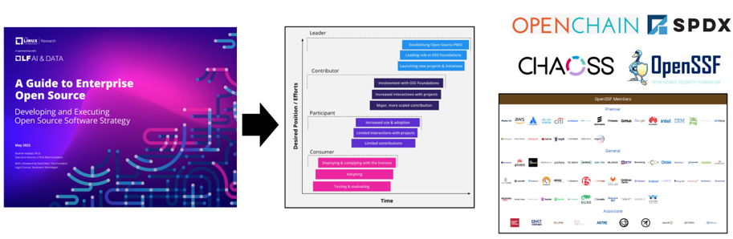
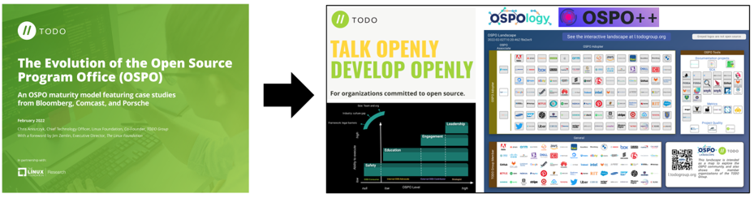
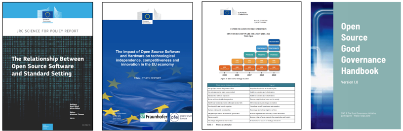
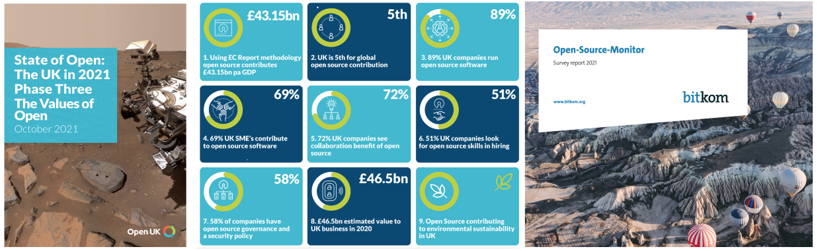
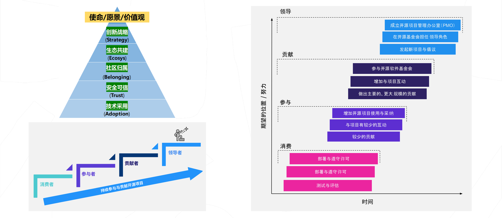
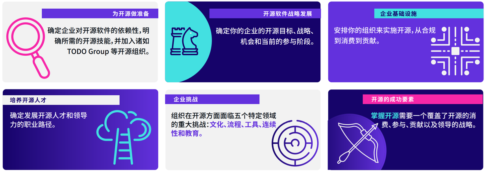

<!DOCTYPE html>
<html lang="en">
  <head>
    <meta charset="utf-8" />
    <meta name="viewport" content="width=device-width, initial-scale=1.0, maximum-scale=1.0, user-scalable=no" />

    <title>reveal-md</title>
    <link rel="shortcut icon" href="./favicon.ico" />
    <link rel="stylesheet" href="./dist/reset.css" />
    <link rel="stylesheet" href="./dist/reveal.css" />
    <link rel="stylesheet" href="./dist/theme/black.css" id="theme" />
    <link rel="stylesheet" href="./css/highlight/base16/zenburn.css" />


  </head>
  <body>
    <div class="reveal">
      <div class="slides"><section  data-markdown><script type="text/template"># 从企业看开源

## 开源发展策略的共识



</script></section><section  data-markdown><script type="text/template">
## 全球企业开源发展路线

### Linux基金会的运作



### TODO Group 的运作



</script></section><section  data-markdown><script type="text/template">
## 欧盟的开源发展路线





</script></section><section  data-markdown><script type="text/template">
## 企业参与开源的不同阶段



</script></section><section  data-markdown><script type="text/template">
## 从开源社区视角看企业参与开源


* **自由职业者**：追求个人兴趣与价值的实现；
* **商业组织**：追求长期价值创造和业务利润转化，通过贡献获得回报，并推动开源生态发展；
* **基金会**：追求开源生态的健康与可持续性发展；
* **政府**：在一个地区或地方，拥有法定的权力，追求公平的繁荣；
* **事业组织**：教育科研机构、行业学会等，追求每个组织的宗旨与使命；
* **国际组织**：国际协会、区域组织等，致力于公平、安全、稳定的可持续发展；
* **用户**：社区提供的开源项目的使用方，追求长期、可持续、稳定可靠的开源组件。

</script></section><section  data-markdown><script type="text/template">
## 企业为开源采取的行动


</script></section><section  data-markdown><script type="text/template"></script></section></div>
    </div>

    <script src="./dist/reveal.js"></script>

    <script src="./plugin/markdown/markdown.js"></script>
    <script src="./plugin/highlight/highlight.js"></script>
    <script src="./plugin/zoom/zoom.js"></script>
    <script src="./plugin/notes/notes.js"></script>
    <script src="./plugin/math/math.js"></script>
    <script>
      function extend() {
        var target = {};
        for (var i = 0; i < arguments.length; i++) {
          var source = arguments[i];
          for (var key in source) {
            if (source.hasOwnProperty(key)) {
              target[key] = source[key];
            }
          }
        }
        return target;
      }

      // default options to init reveal.js
      var defaultOptions = {
        controls: true,
        progress: true,
        history: true,
        center: true,
        transition: 'default', // none/fade/slide/convex/concave/zoom
        slideNumber: true,
        plugins: [
          RevealMarkdown,
          RevealHighlight,
          RevealZoom,
          RevealNotes,
          RevealMath
        ]
      };

      // options from URL query string
      var queryOptions = Reveal().getQueryHash() || {};

      var options = extend(defaultOptions, {}, queryOptions);
    </script>

    <script src="./_assets/./assets/echarts.min.js"></script>

    <script>
      Reveal.initialize(options);
    </script>
  </body>
</html>
